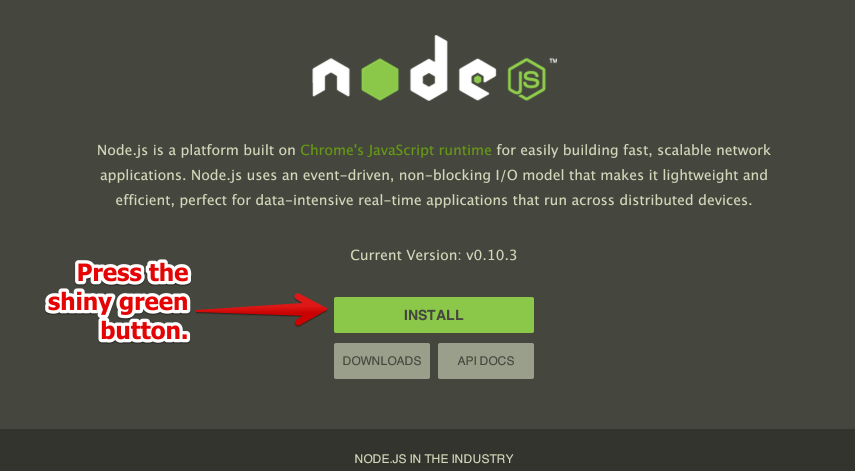
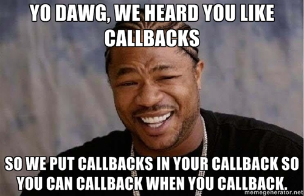
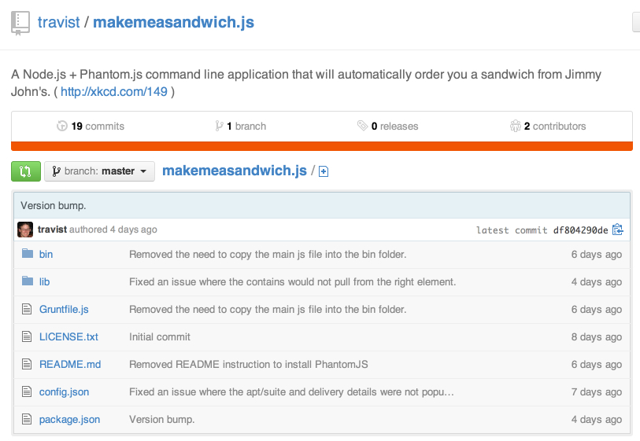

+
+

Automation and Testing Awesomesauce!
by Travis Tidwell | @softwaregnomehttps://github.com/travist
VP of Technology for AllPlayers.com
AllPlayers.com

Motivation
Current testing and automation frameworks...
- define their own "non-familiar" interfaces.
- are not particularly suited for automation.
- usually not able to leverage additional libraries.
- usually not written in JavaScript.
What makes jQuery so friggin' awesome?
jQuery changed the paradigm on how we write JavaScript.
$('find something').doThisWithSomething().doSomethingElse();JavaScript is now 'isomorphic'
↔
Can be used for both browser and server-side development.
How can we bring the jQuery interface to Node.js?
And why would we want to do it?
jQuery does more than just flashy UI stuff
There is a jQuery project for Node.js
https://github.com/coolaj86/node-jquery- jQuery wrapper to be used with JSDOM.
- Used for DOM manipulation within Node.js.
- Not intended for automation and testing.
Using jQuery to Automate the web
jquery.go.js
https://github.com/travist/jquery.go.js
- Uses jQuery interface for testing and automation.
- Leverages Phantom.js for headless web browsing.
- Built within Node.js for power and flexibility.
A jQuery interface between Node.js and Phantom.js
Using jquery.go.js
Step 1: Go to http://nodejs.org/ and download and install.
Step 2: Setup your project
mac:~ travist$ mkdir jquerygo
mac:~ travist$ cd jquerygo
mac:jquerygo travist$ nano package.json
{
"name": "jquerygo",
"dependencies": {
"jquerygo": ">=0"
}
}
mac:jquerygo travist$ npm install
Step 3: Create your application.
mac:jquerygo travist$ nano app.js
var $ = require('jquerygo');
$.config.addJQuery = false;
$.visit("http://api.jquery.com", function() {
$('input[placeholder="Search"]').val('each', function() {
$('button.icon-search').click(function() {
$.waitForElement('div.entry-summary:eq(0) p', function() {
$('div.entry-summary:eq(0) p').text(function(summary) {
console.log(summary);
$.close();
});
});
});
});
});
examples/example1.js: Search the jQuery API
mac:jquerygo travist$ node app.js
Everything is asynchronous
var text = $('h1').text();
console.log(text);
$('h1').text(function(text) {
console.log(text);
});
Asynchronous vs. Serial
Serial Execution
Waits for one operation to end before starting the next.
function doSomething() {
console.log('something');
}
function doSomethingElse() {
console.log('something else');
}
doSomething();
doSomethingElse();
'something'
'something else'
Serial Execution
It gets interesting when they depend on one another.
function getSomething() {
return 'something';
}
function saySomething(what) {
console.log(what);
}
var something = getSomething();
saySomething(something);
'something'
Serial Execution
And more interesting when getSomething depends on an asynchronous source.
function getSomething() {
http.get('http://google.com', function(response) {
return response; // ??????
});
// returns nothing... undefined
}
function saySomething(what) {
console.log(what);
}
var something = getSomething(); // something = undefined
saySomething(something);
undefined

Asynchronous Execution
function getSomething(callback) {
http.get('http://google.com', function(response) {
callback(response);
});
}
function saySomething(what) {
console.log(what);
}
getSomething(function(what) {
saySomething(what);
});
'something'
So, let's revisit our example...
$.visit("http://api.jquery.com", function() {
$('input[placeholder="Search"]').val('each', function() {
$('button.icon-search').click(function() {
$.waitForElement('div.entry-summary:eq(0) p', function() {
$('div.entry-summary:eq(0) p').text(function(summary) {
...
...
OMG this goes on forever!
...
...
});
});
});
});
});
Callback hell anyone?
Using async.js
https://github.com/caolan/async- Uses asynchronous control flow to provide a serial appearance.
- Implementation of JavaScript 'promises'.
- Isomorphic
Install Async.js
"dependencies": {
"async": ">=0",
...
mac:jquerygo travist$ npm installasync.series usage
var async = require('async');
async.series([
function(done){
// do some stuff ...
done();
},
function(done){
// do some more stuff ...
done();
}
], function(){
// Called when all callbacks above have finihsed executing.
});
async.series example
Before:
$.visit("http://api.jquery.com", function() {
$('input[placeholder="Search"]').val('each', function() {
$('button.icon-search').click(function() {
$.waitForElement('div.entry-summary:eq(0) p', function() {
$('div.entry-summary:eq(0) p').text(function(summary) {
console.log(summary);
$.close();
});
});
});
});
});After:
async.series([
function(done) {
$.visit("http://api.jquery.com", done);
},
function(done) {
$('input[placeholder="Search"]').val('each', done);
},
function(done) {
$('button.icon-search').click(done);
},
function(done) {
$.waitForElement('div.entry-summary:eq(0) p', done);
}
], function() {
$('div.entry-summary:eq(0) p').text(function(summary) {
console.log(summary);
$.close();
});
});examples/example2.js: Using async.series
Using the 'go' method
$.go("method")
$('selector').go("method") async.series([
$.go('visit', 'http://api.jquery.com'),
$('input[placeholder="Search"]').go('val', 'each'),
$('button.icon-search').go('click'),
$.go('waitForElement', 'div.entry-summary:eq(0) p')
], function() {
$('div.entry-summary:eq(0) p').text(function(summary) {
console.log(summary);
$.close();
});
});examples/example3.js: Using async.series
Another Example
Using each()
var $ = require('jquerygo');
var async = require('async');
async.series([
$.go('visit', 'http://api.jquery.com/'),
function(done) {
$('h1.entry-title a').each(function(index, item, done) {
this.text(function(text) {
console.log(text);
done();
});
}, done);
}
], function() {
$.close();
});
examples/example4.js: Using each
Extending jquery.go.js
Example: Login
var $ = require('jquerygo');
var async = require('async');
async.series([
$.go('visit', 'https://drupal.org/user'),
$('#edit-name').go('val', 'travist'),
$('#edit-pass').go('val', '123password'),
$('#edit-submit').go('click'),
$.go('waitForPage')
], function() {
console.log('You are now logged in!');
$.capture('loggedin.png');
$.close();
});
Add the login method to the '$' object.
var $ = require('jquerygo');
var async = require('async');
$.login = function(user, pass, done) {
async.series([
$.go('visit', 'https://drupal.org/user'),
$('#edit-name').go('val', user),
$('#edit-pass').go('val', pass),
$('#edit-submit').go('click'),
$.go('waitForPage')
], done);
};
async.series([
$.go('login', 'travist', '123password')
], function() {
console.log('You are now logged in!');
$.capture('loggedin.png');
$.close();
});
Leveraging the Node.js ecosystem.
Example: Login
var $ = require('jquerygo');
var async = require('async');
$.login = function(user, pass, done) {
async.series([
$.go('visit', 'https://drupal.org/user'),
$('#edit-name').go('val', user),
$('#edit-pass').go('val', pass),
$('#edit-submit').go('click'),
$.go('waitForPage')
], done);
};
async.series([
$.go('login', 'travist', '123password')
], function() {
console.log('You are now logged in!');
$.capture('loggedin.png');
$.close();
});
Using Configurations
Let's change this code to use a configuration file.
Using a library called nconf.
"dependencies": {
"nconf": ">=0",
...
mac:jquerygo travist$ npm install
{
"user": "travist",
"pass": "123password"
}
Using Configurations
config.json
{
"user": "travist",
"pass": "123password"
}
var $ = require('jquerygo');
var async = require('async');
var config = require('nconf');
config.argv().env().file({file:'config.json'});
$.login = function(user, pass, done) {......};
async.series([
$.go('login', config.get('user'), config.get('pass'))
], function() {
console.log('You are now logged in!');
$.close();
});
Using Prompt
Change the password so it prompts you for it.
Using a library called prompt.
"dependencies": {
"prompt": ">=0",
...
mac:jquerygo travist$ npm installUsing Prompt
Change the password so it prompts you for it.
Using a library called prompt.
var prompt = require('prompt');
prompt.start();
$.login = function(user, pass, done) {......};
async.series([
function(done) {
prompt.get({name: 'pass', hidden: true}, function(err, data) {
config.set('pass', data.pass);
done();
});
},
$.go('login', config.get('user'), function() {
return config.get('pass');
})
], function() {
console.log('Logged in.');
$.capture('loggedin.png');
$.close();
});
examples/example5.js: Using config and prompt.
A real world example

makemeasandwich.js
https://github.com/travist/makemeasandwich.js Setup
mac:~ travist$ npm install -g makemeasandwich
{
"email": "",
"company": "AllPlayers.com",
"address": "14665 Midway Road",
"apt/suite": "220",
"city": "Addison",
"state": "Texas",
"zip": "75001",
"sandwich": "country club",
"who": "Travis",
"bread": "French Bread",
"cut": true,
"drink": "",
"chips": "Regular Jimmy Chips",
"cookie": "",
"pickle": "",
"Tomato": "NO",
"tip": "2",
"billing_address": "123 Main St.",
"billing_city": "Carrollton",
"billing_state": "Texas",
"billing_zip": "75007"
}
mac:~ travist$ makemeasandwich -o config.json
jQuery is more powerful than you realize
Happy automating!
Thanks
References
- Blog: http://travistidwell.com
- Presentation: http://travistidwell.com/presentations/jquery-node-phantom/
- Source: https://github.com/travist/presentations/tree/master/jquery-node-phantom
- Presentation Video: https://youtube.com/travist349
- jquery.go.js: http://github.com/travist/drupal.go.js
- Github Profile: https://github.com/travist